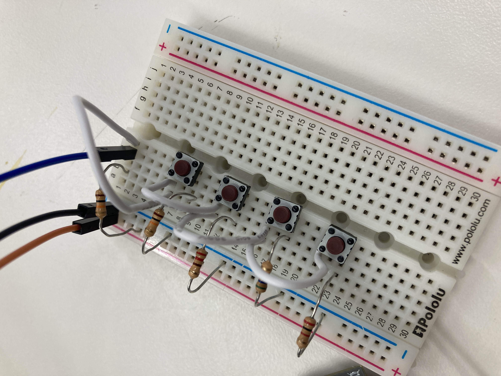

<!DOCTYPE html>
<html>
  <head>
    <meta charset="utf-8"/>
    <title>Connor x PS70</title>
    <link href="https://cdn.jsdelivr.net/npm/bootstrap@5.3.0-alpha1/dist/css/bootstrap.min.css" rel="stylesheet" integrity="sha384-GLhlTQ8iRABdZLl6O3oVMWSktQOp6b7In1Zl3/Jr59b6EGGoI1aFkw7cmDA6j6gD" crossorigin="anonymous">
    <link rel="icon" href="../images/favicon.ico">
    <link rel="stylesheet" href="https://maxcdn.bootstrapcdn.com/bootstrap/3.4.1/css/bootstrap.min.css">
  <script src="https://ajax.googleapis.com/ajax/libs/jquery/3.6.1/jquery.min.js"></script>
  <script src="https://maxcdn.bootstrapcdn.com/bootstrap/3.4.1/js/bootstrap.min.js"></script>
  <script src="https://cdn.jsdelivr.net/gh/google/code-prettify@master/loader/run_prettify.js"></script>

  <link rel="stylesheet" href="../styles.css">

  </head>
  <body>
    <a href="../index.html?first=False"><button>Back to Home</button></a>

    <h1>Week 7: Electronic Output Devices</h1>
    <p>This week, we learned about using different devices to display output electronically. We also learned to use an Oscilloscope, and worked on using it to get a better idea of what's going on inside our circuits.</p>

    <h2>LED Strips and More Efficient Buttons</h2>

    <p>My final project will likely include some decorative LED strips that can change color/design when asked to, so I wanted to get some practice with that. Also, since I used buttons in a previous project, I wanted to add an extra challenge and attempt to read the inputs of all buttons (4 at first) with just one pin.</p>

    <h3>Buttons</h3>

    <p>I began with the buttons before starting with the LED strip, and this ended up being a bit more troublesome than I expected. I was confused for a while about what should be connected to power and what should be connected to ground in order to differentiate between the buttons. It ended up working more as expected when one side of each button was connected to ground through a different valued resistor, while the other sides of the buttons were all connected to both an output pin and a 5-volt power source. The different valued capacitors meant that when a button was pressed, the reading in the input pin would be unique to that button. Once I had that going, I could create a button class to detect when a button was pressed.</p>

    

    <div class="container">
      <div class="row">
          <div class="col-xs-6">
            <p>Buttons.h</p>
            <pre class="prettyprint lang-cpp pre-scrollable" >
#ifndef BUTTONS_H
#define BUTTONS_H
#include <Arduino.h>
#include "Constants.h"

class Buttons
{
  private:
    // ON = 1, OFF = 0, ALMOST OFF = 2
    int previousStates[N_BUTTONS];
    int lowerBounds[N_BUTTONS];
    int upperBounds[N_BUTTONS];
    void print_arr(int *arr);
    
    int state_to_button(int value);
    int newButtonStates[N_BUTTONS];
    int pin;
    long offTimes[N_BUTTONS];


  public:
    Buttons(int pinNumber, int *lowers, int *uppers);
    int detectStart();
};

#endif
            </pre>
            
            
          </div>
          <div class="col-xs-6">
            <p>Buttons.cpp</p>
            <pre class="prettyprint lang-cpp pre-scrollable">
#include "Buttons.h"
#include <Arduino.h>
#include "Constants.h"

Buttons :: Buttons(int pin_number, int *lowers, int *uppers)
{
  pin = pin_number;
  for (int i = 0; i < N_BUTTONS; i++)
  {
    previousStates[i] = false;
    lowerBounds[i] = lowers[i];
    upperBounds[i] = uppers[i];
  }
}

void Buttons :: print_arr(int *arr)
{
  for (int i = 0; i < N_BUTTONS; i++)
  {
    Serial.print(arr[i]);
    Serial.print(", ");
  } 
  Serial.println();
}

int Buttons :: state_to_button(int value)
{
  // Serial.println(value);
  for (int i = 0; i < N_BUTTONS; i++)
  {
    if (value > lowerBounds[i] && value < upperBounds[i])
    {
      return i;
    }
  }
  return -1;
}

// detects switches from pressed to unpressed or vice versa
// returns true if now it's pressed, false otherwise
int Buttons :: detectStart(){
  int buttonPressed = state_to_button(analogRead(pin));

  // reset buttons not being pushed if enough time has passed
  // Before this, had problems, with tiny mismeasurements resetting values
  for (int i = 0; i < N_BUTTONS; i++)
  {
    if (i != buttonPressed)
    {
      if (previousStates[i] == 1) {
        offTimes[i] = millis();
        previousStates[i] = 2;
      }
      else if (previousStates[i] == 2 && millis() - offTimes[i] > 50){
        previousStates[i] = 0;
        Serial.println("HERE");
      }
    }
  }

  if (buttonPressed == -1)
  {
    return -1;
  }

  if (!previousStates[buttonPressed]) {
    previousStates[buttonPressed] = 1;
    return buttonPressed;
  }
  previousStates[buttonPressed] = 1;  
  return -1;
}
            </pre>
          </div>
      </div>
    </div>

    <p>The coding was fairly interesting, as I had to think about how to pass values like the thresholds into the class, how to store the states of multiple buttons, and most interestingly, how to deal with a slightly noisy signal that was leading to my buttons detecting multiple presses when only pressed once. To solve this, I added an extra button state that represented a button in between being pushed and released, and specified that 50 milliseconds had to pass in this state before the button was marked as released.</p>

    <h3>LED Strip</h3>

    <p>I had quite a bit of trouble with the LED strips at first, as I couldn't get the AdaFruit library alone to work on my ESP32 (first time trying one of these, so it could be my lack of of expertise). I ended up downloading an additional library called <a href="http://fastled.io/docs/3.1/index.html">FastLED</a> that is supposed to work for many different devices, and was successful with this! I ended up allowing the strip to switch between three different colors (Red, Green, and Blue) and five different modes (off, constant, blinking, blinking fast, and circling). Most code was fairly straightforward, but I was excited about how for the circling I was able to use some integer division rather than remembering which LED was last activated and then moving onto the next one.</p>

    <div class="container">
      <div class="row">
          <div class="col-xs-6">
            <p>Strip.h</p>
            <pre class="prettyprint lang-cpp pre-scrollable">
#ifndef STRIP_H
#define STRIP_H
#include <Arduino.h>
#include "Constants.h"
#include <FastLED.h>

class Strip
{
  private:
    long last_time;
    // 0 = red, 1 = blue, 2 = green
    int color;
    // 0 = off, 1 = constant, 2 = blink, 3 = blink fast, 4 = circle
    int mode;
    CRGB *leds;
    CRGB colors[4] = {CRGB::Red, CRGB::Blue, CRGB::Green, CRGB::Black};
    bool on;
    void update_all(int color);
    void blink_update(long duration);
    void circle_update(long duration);


  public:
    Strip(CRGB *leds_in);
    void update();
    void change_color();
    void change_mode();
};

#endif
            </pre>
            
            
          </div>
          <div class="col-xs-6">
            <p>Strip.cpp</p>
            <pre class="prettyprint lang-cpp pre-scrollable">
#include "strip.h"
#include <Arduino.h>
#include "Constants.h"
#include <FastLED.h>

Strip :: Strip(CRGB *leds_in)
{
  leds = leds_in;
  on = false;
  mode = 1;
  last_time = millis();

}

void Strip :: update_all(int c)
{
  for (int i = 0; i < NUM_LEDS; i++)
  {
    leds[i] = colors[c];
  }
}

void Strip :: blink_update(long duration)
{
  // switch from on to off
  if (millis() - last_time > duration)
  {
    on = !on;
    last_time = millis();
    Serial.println("HERE");
  }

  if (on)
  {
    update_all(color);
  }
  else
  {
    update_all(3);
  }
}

void Strip :: circle_update(long duration)
{
  long time = millis() - last_time;
  // reset time if surpassed to avoid overflow
  if (time > duration){
    last_time = millis();
    time = 0;
  }
  for (int i = 0; i < NUM_LEDS; i ++)
  {
    if (time * NUM_LEDS / duration == i) 
    {
      leds[i] = colors[color];
    }
    else
    {
      leds[i] = colors[3];
    }
  }
  
}

void Strip :: update()
{
  if (mode == 1) {
    update_all(color);
  }
  if (mode == 0) {
    update_all(3);
  }
  if (mode == 2){
    blink_update(500);
  }
  if (mode == 3){
    blink_update(250);
  }
  if (mode == 4) {
    circle_update(1000);
  }
  FastLED.show();
}

void Strip :: change_mode()
{
  mode = (mode + 1) % 5;
}

void Strip :: change_color()
{
  color = (color + 1) % 3;
}
            </pre>
          </div>
      </div>
    </div>

    <p>I then just had to bring the two classes together with a main section that wasn't much work since so much of the functionality is abstracted away into the classes:</p>

    <pre class="prettyprint lang-cpp pre-scrollable">
#include "buttons.h"
#include "strip.h"
#include <FastLED.h>
#include "constants.h"

CRGB leds[NUM_LEDS];

int lowerBounds[] = {1500, 500};
int upperBounds[] = {3000, 1000};

Buttons bs = Buttons(BUTTON_PIN, lowerBounds, upperBounds);
Strip stp = Strip(leds);

void setup()
{
  Serial.begin(115200);
  FastLED.addLeds<NEOPIXEL, LED_PIN>(leds, NUM_LEDS);
}

void loop()
{
  int buttonValue = bs.detectStart();
  if (buttonValue == 0){
    stp.change_color();
  }
  if (buttonValue == 1)
  {
    stp.change_mode();
  }
  stp.update();
  
}
    </pre>

    <iframe width="393" height="699" src="https://www.youtube.com/embed/x7MVZ4nybxg" title="LED Strip Demo" frameborder="0" allow="accelerometer; autoplay; clipboard-write; encrypted-media; gyroscope; picture-in-picture; web-share" allowfullscreen></iframe>

    <p>It ended up looking pretty cool, but there were a ton of wires and it wasn't the neatest project, so I decided to try to clean up the design. This was a long process that included laser cutting a circle for mounting, drilling holes through this for wires, and lots and lots of soldering! I got some good soldering practice in and attempted neatness like this for probably the first time, and I was really  happy with how it turned out, I even added a few legs so it could stand up!</p>

    <div class="container">
      <br>
      <div id="myCarousel" class="carousel slide" data-interval="false">
        <!-- Indicators -->
        <ol class="carousel-indicators">
          <li data-target="#myCarousel" data-slide-to="0" class="active"></li>
          <li data-target="#myCarousel" data-slide-to="1"></li>
          <li data-target="#myCarousel" data-slide-to="2"></li>
          <li data-target="#myCarousel" data-slide-to="3"></li>
        </ol>
    
        <!-- Wrapper for slides -->
        <div class="carousel-inner" role="listbox">
    
          <div class="item active">
            
            <div class="carousel-caption light">
              <h3>Legs added</h3>
            </div>
          </div>

          <div class="item">
            
            <div class="carousel-caption light">
              <h3>View of wiring on the bottom</h3>
            </div>
          </div>
          <div class="item">
            
            <div class="carousel-caption light">
              <h3>View from the top</h3>
            </div>
          </div>

          <div class="item">
            
            <div class="carousel-caption light">
              <h3>View from side</h3>
            </div>
          </div>
      
        </div>

        
    
        <!-- Left and right controls -->
        <a class="left carousel-control" href="#myCarousel" role="button" data-slide="prev">
          <span class="glyphicon glyphicon-chevron-left" aria-hidden="true"></span>
          <span class="sr-only">Previous</span>
        </a>
        <a class="right carousel-control" href="#myCarousel" role="button" data-slide="next">
          <span class="glyphicon glyphicon-chevron-right" aria-hidden="true"></span>
          <span class="sr-only">Next</span>
        </a>
      </div>
    </div>

    <p>Here's a video of what the final product looks like!</p>

        <iframe width="393" height="699" src="https://www.youtube.com/embed/MWPT-xFNN28" title="led strip final" frameborder="0" allow="accelerometer; autoplay; clipboard-write; encrypted-media; gyroscope; picture-in-picture; web-share" allowfullscreen></iframe>

    

    <h2>Measuring Circuit with an Oscilloscope</h2>

    <p>I hooked up the oscilloscope, and after a couple of youtube videos and some help from Nathan on callibration, I got a mostly stable reading:</p>

    

    <p>It appears from this reading that the signal varies from around 0 V to 3.3 V, and that in the short run, signals change in as little as a quarter of a millisecond. There is also a longer-run pattern where high signals are sent for longer periods of time for a few cycles, and then short periods for a few more. I was confused by this at first since only one color was active at the time of the reading, but it turns out this is because the LED strip interacts with the program a bit differently than a normal LED, in that it simply gets sent encoded information in the form of different versions of this up-and-down pattern we see in the image. This means that the circuit runs on a fixed clock of around 30 milliseconds, but withing this period there are smaller switches that encode information. </p>

    <h2>Design for molding and casting</h2>

    <p>Part of this week's assignment was to draft a design that we might CNC. I decided to make a first pass at what my final project device might look like. For a while I was thinking about a car shape, but I was inspired by the turning ability (and cuteness) of a roomba over break, so I think I might use a circle instead. I made one with an elevated cylinder for an LED strip and some cute (at least I think they'll be more cute when they're not all grey) little eyes!</p>

    


  </body>
</html>